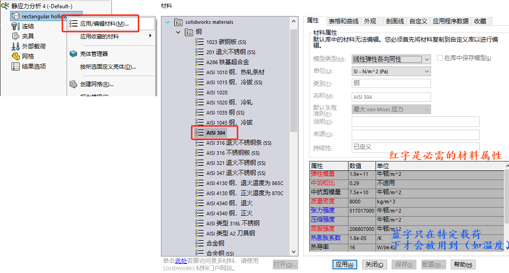
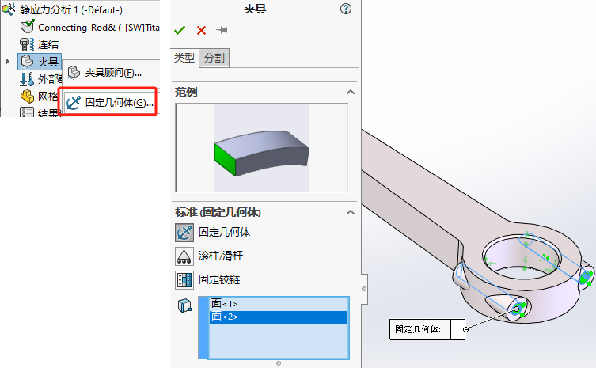
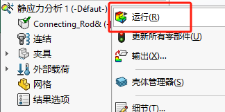
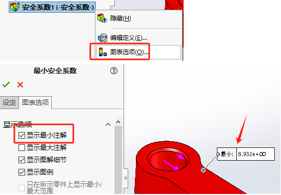

静态分析
打开插件

新建算例
在运行第一个初始静态模拟之后，您可以启动趋势跟踪器，并将初始分析作为基线设计，以比较后续的设计更改。

材料
【材料】材料:合金钢
连结
单零件的话是没有连结的，这一点可以忽略
夹具
因为曲柄固定环处会产生旋转运动，所以在此圆柱面上作“固定铰链”约束。
在螺丝固定位置，我们选择“固定几何体”
外部载荷
在有限元分析中，要确保静态分析，除了载荷静态之外，有一个非常重要的因素:整个结构所有的部件都必须保证静态，不能存在可能发生的运动趋势。

网格
默认网格
应用网格控制
运行
应力
位移
应变
安全系数
检查最危险（最小）位置
趋势跟踪器
在SolidWorks Simulation Standard中，有一个名为趋势跟踪器的直观工具可用于评估连续设计更改对产品性能的影响。帮助产品工程师从静态研究的不同迭代中检测结果的趋势，从而在设计过程的早期指导设计决策。
设置基准线
在运行第一个初始静态模拟之后，您可以启动趋势跟踪器，并将初始分析作为基线设计，以比较后续的设计更改。
添加趋势传感器
添加趋势跟踪数据图表
当用户执行自由形式的设计更改时，趋势跟踪器自动执行所有记录，以保存结果，如重量，压力，位移或用户想要跟踪的任何其他参数。
在这个连杆示例中，我们的第一个初始静态模拟显示最小安全系数为9。模型修改不同形状和尺寸下的变化趋势：
迭代1修改厚度
我们想减少杆本身的厚度16至14，使其更轻，然后重新运行静态模拟。厚度减小后的结果。我们的最小FOS仍然很大。厚度的减少使总重量减少了约15%。
迭代2切除中间
让我们继续设计。我们想了解通过所有连杆切断的影响。通过这种设计更改，FOS下降到4.4。与此同时，趋势跟踪器显示，与基线1相比，压力水平有所增加，而体重减轻了40%。
迭代3中间加强筋
让我们将一些材料添加回连杆并重新运行模拟。现在让我们看看我们的趋势追踪结果。我们可以看到，即使连杆的重量增加了一点点，与此同时，我们能够将应力水平降低35%。
同样，用户可以继续执行所有设计更改，趋势跟踪器保留所有值以进行比较研究。
查看趋势
趋势跟踪器的一个很好的功能叫做查看图库。查看图库是SolidWorks Simulation保存每次迭代的应力和位移等结果的地方，因此用户可以同时查看所有这些结果以进行比较研究。
趋势跟踪器还可以保存每次设计迭代的记录。因此任何时候，用户都可以回到特定的迭代中查看更多细节，并保留最佳设计理念。